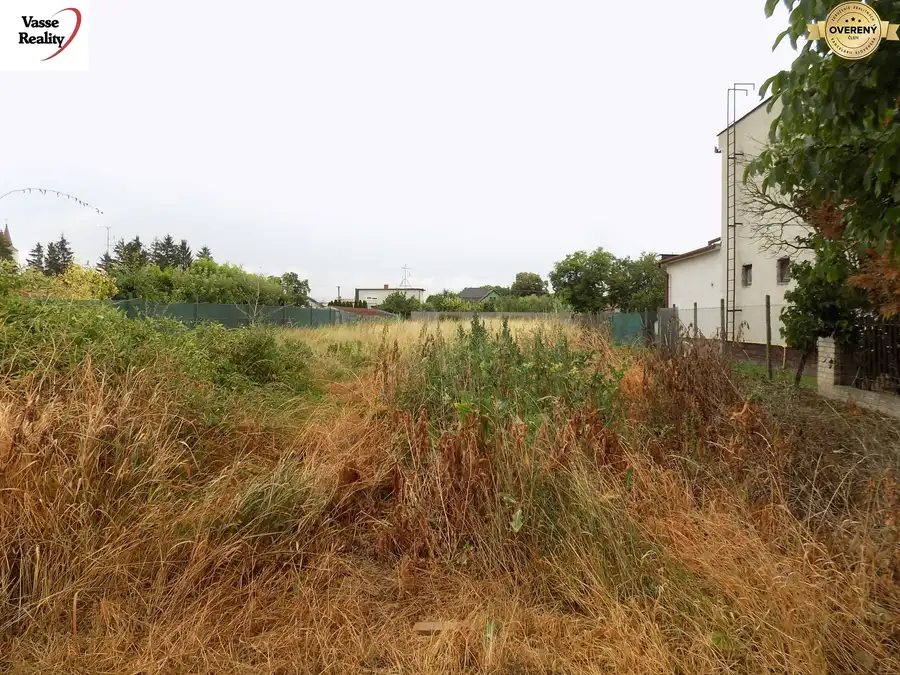
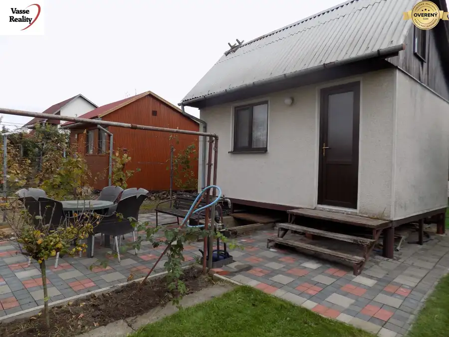
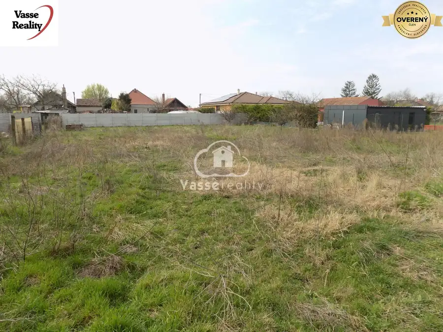

Viacgeneračný rodinný dom s garážou a záhradou v Tvrdošovciach
Tvrdošovce
- Dispozícia6-izbový
- Plocha810 m²
- Stavpôvodný
- Vlastníctvoosobné
O nehnuteľnosti
Ponúkame na predaj priestranný viacgeneračný rodinný dom v malebnej obci Tvrdošovce, ktorý je ideálny pre väčšie rodiny alebo tých, ktorí hľadajú dostatok priestoru na bývanie aj podnikanie. Tento poschodový dom bol postavený v roku 1977 a nachádza sa na pozemku s rozlohou 810 m2, pričom zastavaná plocha domu je približne 100 m2.
Dom je rozdelený na dve hlavné časti – dennú a nočnú. Na prvom poschodí nájdete priestrannú predizbu, z ktorej vedie chodba do kuchyne so špajzou. K dispozícii je aj kúpeľňa, samostatné WC a dve izby, ktoré môžu slúžiť ako obývacia izba a pracovňa. Z kuchyne je prístup na balkón, ktorý poskytuje príjemný výhľad na okolitú krajinu. Polovica domu je podpivničená, čo ponúka dostatok úložného priestoru.
Na druhom poschodí sa nachádzajú štyri samostatné izby, z ktorých tri majú vlastný balkón. V jednej miestnosti je aj voda vhodné na kuchynu alebo na ďalšiu kúpeľňu . Menší šatník poskytuje priestor na uskladnenie oblečenia a iných osobných vecí. Dom je napojený na obecný vodovod a elektrickú sieť, kúrenie je zabezpečené plynovými gamatkami a ohrev vody plynovým bojlerom. Na pozemku sa nachádza aj studňa, ktorá môže slúžiť ako alternatívny zdroj vody. Oprava strechy je nutná ! Dom je v pôvodnom stave vhodný na rekonštrukciu . Rodinný dom je v súčasnosti napojený na žumpu- v dedine sa už buduje aj kanalizácia .Obecná voda je v dome napojená a je natiahnutá aj hore na poschodie -je možnosť dať tam aj kuchyňu. Vonku na pozemku je aj studňa. Kúrenie plynovými gamatkami, ohrev vody na plynový bojler. Podlahy: betón, na chodbe a v kúpeľni je dlažba. Celý dom je v pôvodnom stave- strecha potrebuje opraviť!. Dom stojí na frekventovanom mieste ale je možný aj bočný vchod .
Za domom je samostatná garáž s rozlohou 27 m2 a letná kuchyňa s izbou, ktorá je však v horšom stave a môže byť vhodná na zbúranie. Súčasťou pozemku sú aj hospodárske budovy, ktoré môžu byť využité na chov zvierat. Obec Tvrdošovce ponúka výbornú občiansku vybavenosť vrátane materskej a základnej školy, obchodov, pošty, zdravotného strediska a termálneho kúpaliska. Výhodou je aj dobré dopravné spojenie do blízkych miest ako Nové Zámky, Nitra či Bratislava.
Obec má veľmi dobré vlakové a autobusové spojenie do Nových Zámkov, ktoré je vzdialené 15 km, do Bratislavy je 100 km ,Nitra je 31 km , je zabezpečené autobusové spojenie do Jaguar Land Rover.
OBČIANSKA VYBAVENOSŤ- MŠ, ZŠ, obchody, pošta, železničná stanica, supermarket, zdravotné stredisko, termálne kúpalisko.
Cena tejto nehnuteľnosti zahŕňa kompletný právny servis vrátane vypracovania kúpnych zmlúv a návrhu na vklad do katastra nehnuteľností. Ak hľadáte dom s potenciálom, ktorý si môžete prispôsobiť podľa vlastných predstáv, neváhajte nás kontaktovať pre viac informácií alebo dohodnutie obhliadky.
Parametre
| Rozloha pozemku | 810 m² |
|---|---|
| Zastavaná plocha | 103 m² |
| Celková rozloha | 810 m² |
| Počet izieb | 6 |
| Vlastníctvo | osobné |
| Stav | pôvodný |
| Odvoz odpadu | áno - separovaný |
| Voda | studňa a vodovod |
| El. napätie | 230/400V |
| Plyn | áno |
| Kanalizácia | žumpa |
| Kúpeľňa | vaňa a sprchovací kút |
| Vykurovanie | vlastné - plyn |
| Balkón | áno - 3 |
| Pivnica | áno |
| Garáž | áno |
| Inžinierske siete | áno |
| Postavené z | panel |
| Zariadenie | nezariadený |
| Zateplený objekt | nie |
| Strecha | pôvodná |
| Klimatizácia | nie |
| Energetický certifikát | nie |
| Bezbariérový prístup | nie |
| Okná | drevené |
| Terén | rovina |
| Prístupová cesta | asfaltová cesta |
| Dátum zverejnenia | 9. 7. 2025 |
Kde to je
Mohlo by Vás zaujímať

Developerské projekty5 30 000 €Znížená cena !Na predaj rovinatý pozemok v centre obce Bíňa -1088 m2. Bíňa 1088 m² Len u nás ! Ponúkame na predaj lacný pozemok v strede dediny Bíňa. Slnečný pozemok je oplotený z 3 strán , inžinierske siete sú pred pozemkom .…
Chaty a chalupy10 40 000 €Na predaj chatka v príjemnej lokalite Svit 2 pri Nových Zámkoch . Nové Zámky 309 m² VASSE Reality Vám ponúka na predaj útulnú rekreačnú chatku s pozemkom o výmere 309 m², nachádzajúcu sa v pokojnej záhradkárskej oblasti Svit 2 pri…
Developerské projekty9 75 000 €Na predaj pozemok v Andovciach 1124m2. Andovce 1124 m² Hľadáte ideálne miesto pre stavbu rodinného domu, kde sa spája ticho vidieka s blízkosťou mesta? VASSE Reality vám vo výhradnom zastúpení majiteľa…